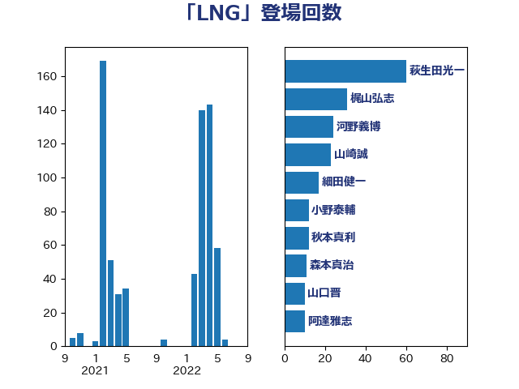

単語「LNG」

| 萩生田光一 | 自由民主党 | 60 回 |
| 梶山弘志 | 自由民主党 | 31 回 |
| 河野義博 | 公明党 | 24 回 |
| 山崎誠 | 立憲民主党 | 23 回 |
| 細田健一 | 自由民主党 | 17 回 |
| 小野泰輔 | 日本維新の会 | 12 回 |
| 秋本真利 | 自由民主党 | 12 回 |
| 森本真治 | 立憲民主党 | 11 回 |
| 山口晋 | 自由民主党 | 10 回 |
| 阿達雅志 | 自由民主党 | 10 回 |
| 岸田文雄 | 自由民主党 | 9 回 |
| 吉良州司 | 無所属 | 8 回 |
| 三浦信祐 | 公明党 | 7 回 |
| 鈴木敦 | 国民民主党 | 7 回 |
| 斉藤鉄夫 | 公明党 | 6 回 |
| 小泉進次郎 | 自由民主党 | 5 回 |
| 熊谷裕人 | 立憲民主党 | 5 回 |
| 世耕弘成 | 自由民主党 | 4 回 |
| 林芳正 | 自由民主党 | 4 回 |
| 梅村聡 | 日本維新の会 | 4 回 |
| 片山大介 | 日本維新の会 | 4 回 |
| 落合貴之 | 立憲民主党 | 4 回 |
| 藤巻健太 | 日本維新の会 | 4 回 |
| 青木愛 | 立憲民主党 | 4 回 |
| 伊東信久 | 日本維新の会 | 3 回 |
| 城井崇 | 立憲民主党 | 3 回 |
| 大塚耕平 | 国民民主党 | 3 回 |
| 宮崎雅夫 | 自由民主党 | 3 回 |
| 小林鷹之 | 自由民主党 | 3 回 |
| 平山佐知子 | 無所属 | 3 回 |
| 浅田均 | 日本維新の会 | 3 回 |
| 田村貴昭 | 日本共産党 | 3 回 |
| 福山哲郎 | 立憲民主党 | 3 回 |
| 山下芳生 | 日本共産党 | 2 回 |
| 山口壯 | 自由民主党 | 2 回 |
| 山岡達丸 | 立憲民主党 | 2 回 |
| 滝波宏文 | 自由民主党 | 2 回 |
| 田嶋要 | 立憲民主党 | 2 回 |
| 石井章 | 日本維新の会 | 2 回 |
| 西田実仁 | 公明党 | 2 回 |
| 赤羽一嘉 | 公明党 | 2 回 |
| 青山繁晴 | 自由民主党 | 2 回 |
| 中川貴元 | 自由民主党 | 1 回 |
| 中野洋昌 | 公明党 | 1 回 |
| 中野英幸 | 自由民主党 | 1 回 |
| 北村経夫 | 自由民主党 | 1 回 |
| 古川康 | 自由民主党 | 1 回 |
| 古賀之士 | 立憲民主党 | 1 回 |
| 塩村あやか | 立憲民主党 | 1 回 |
| 大島敦 | 立憲民主党 | 1 回 |
| 室井邦彦 | 日本維新の会 | 1 回 |
| 山添拓 | 日本共産党 | 1 回 |
| 岡田克也 | 立憲民主党 | 1 回 |
| 岩渕友 | 日本共産党 | 1 回 |
| 後藤祐一 | 立憲民主党 | 1 回 |
| 末松義規 | 立憲民主党 | 1 回 |
| 梅谷守 | 立憲民主党 | 1 回 |
| 江島潔 | 自由民主党 | 1 回 |
| 江田憲司 | 立憲民主党 | 1 回 |
| 泉田裕彦 | 自由民主党 | 1 回 |
| 深澤陽一 | 自由民主党 | 1 回 |
| 熊野正士 | 公明党 | 1 回 |
| 牧原秀樹 | 自由民主党 | 1 回 |
| 田島麻衣子 | 立憲民主党 | 1 回 |
| 石井正弘 | 自由民主党 | 1 回 |
| 石井苗子 | 日本維新の会 | 1 回 |
| 石川昭政 | 自由民主党 | 1 回 |
| 磯崎仁彦 | 自由民主党 | 1 回 |
| 穂坂泰 | 自由民主党 | 1 回 |
| 空本誠喜 | 日本維新の会 | 1 回 |
| 若松謙維 | 公明党 | 1 回 |
| 蓮舫 | 立憲民主党 | 1 回 |
| 西岡秀子 | 国民民主党 | 1 回 |
| 西村康稔 | 自由民主党 | 1 回 |
| 近藤昭一 | 立憲民主党 | 1 回 |
| 野田国義 | 立憲民主党 | 1 回 |
| 阿部知子 | 立憲民主党 | 1 回 |
| 音喜多駿 | 日本維新の会 | 1 回 |
| 高良鉄美 | 無所属 | 1 回 |
| 鶴保庸介 | 自由民主党 | 1 回 |